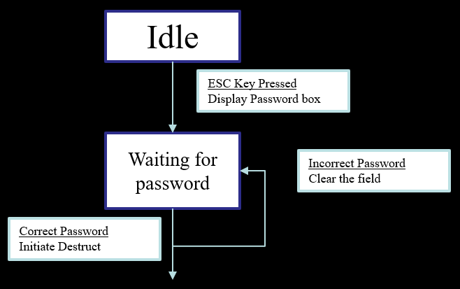
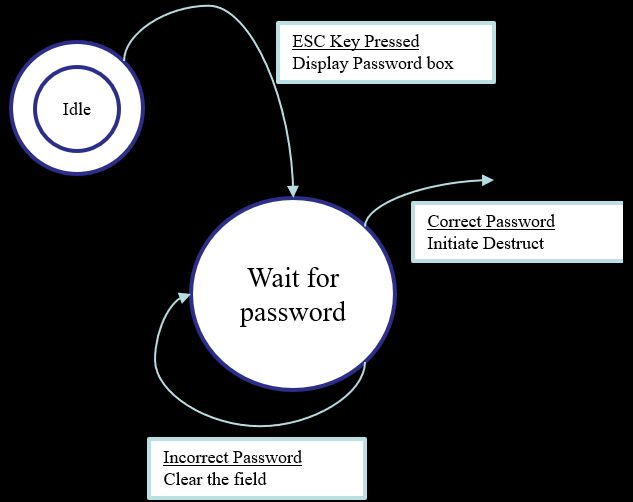

List of traits that most software testers should have:
They are explorers
-
Software testers aren’t afraid to venture into unknown situations. They love to get a new piece of software, install it on their PC, and see what happens.
They are troubleshooters
-
Software testers are good at figuring out why something doesn’t work. They love puzzles.
They are relentless
-
Software testers keep trying. They may see a bug that quickly vanishes or it difficult to re-create. Rather than dismiss it as a fluke, they will try every way possible to find it.
They are Creative
-
Testing the obvious isn’t sufficient for software testers. Their job is to think up creative and even off-the-wall approaches to find bugs.
Black-Box Testing
-
The tester is not aware of the processes occurring. He simply enters the input data and checks the output for correctness

White Box Testing
-
The Tester has access to the programs code and can examine it for clues to help in his testing effort.

Specifications of a system are tested using Static-Black-Box testing.
It’s static because you are not testing the software at runtime, instead you are testing a document.
It’s also black-box because it was derived from various sources (usability studies, focus groups, marketing input etc.) as such we don’t fully understand the source of the document.
Testing an executing software without any knowledge of the underlying code or processes is known as Dynamic Black-Box Testing.
Another name commonly used for dynamic black-box testing is Behavioural Testing
Requires some definition of what the software does. i.e. If you input A you get B, preforming an operation C results in a D.
Test to Pass is a testing technique where the software is tested only to ensure all functions are working
Test to fail involves testing a software to uncover all the bugs in the software through rigorous testing.
The easiest way to test a software is to divide the software into two parts. The Data and the Program.
Data is input and outputs – program is executable flow.
Data testing can be done by:
-
- Boundary Conditions
-
- Sub-boundary Conditions
-
- Default, Empty ,Blank , Null, Zero, and None
-
- Invalid, Wrong, Incorrect, and Garbage data
State testing is concerned with verifying the programs logic flow through its various states.
A software state is a condition or mode the software is currently in.
Testing the software state and logic flow has the same problems as data testing . It is usually possible to visit all state (if you can’t get to them why have them).
The difficulty is that except in small programs it is often impossible to traverse all paths to all states.
This is as a result of a software complexity, especially the richness of today user interface, provides so many choices and options that the number of paths grows exponentially.
The solution is to apply equivalence partitioning techniques to the selection of states and paths to test, assuming some risk because you will choose not to test all the states, but reduce the risk by making intelligent choices.
The first step is to create a state transition map of the software. Such a map may be provided with the specification. if it is, you should statistically test it with techniques described in the previous chapter. If you don’t create a state map
There are different diagramming techniques for state transition. The technique is not important as long as other member of your project team can understand it

